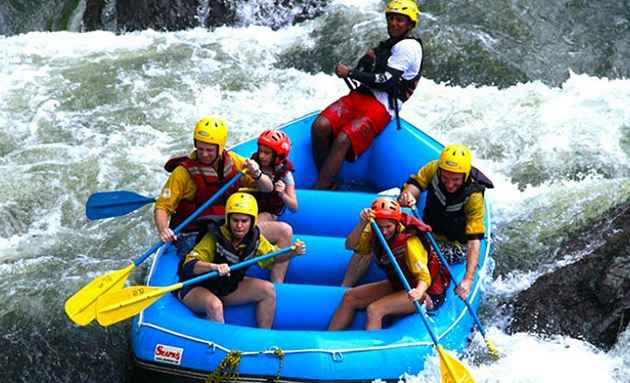
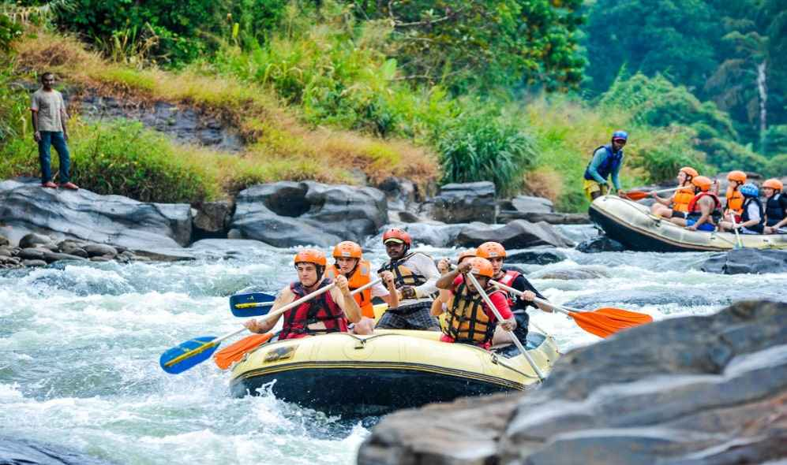

there is no better or more exhilarating way to discover Sri lanaka's
spectacular scenery than white water rafing down a majestic river.
The central highlands of Sri Lanka are home to some of the most adventurous waters out there. Beneath the fame of the ancient temples, pristine beaches,
and lush landscapes, lies the underrated adventures of white water rafting and canyoning.
Best Places for white water rafting!
Kithulgala is famous for its rafting facilities, and you can usually find several shops along the road that rent boats and guides for the activity. If you’re more of an experienced paddler, the rafting routes along Mahaweli, Kalu Ganga, and Kotmale are ideal as well.
KALU GANGA
An exhilarating two-day journey where experienced paddlers navigate grade 4 and 5 rapids; this route takes you along the Sinharaja Rainforest Reserve and drops into a 20km gorge where the challenge truly begins. The first day will take you through the serenity of the jungle, and the second day will be when you face the tumbles and bumps of the chaotic river.

KALANI RIVER
Great for beginners and those that prefer a laid-back ride, you’ll be taken on a one-hour ride where you’ll face some challenging, yet maneuverable waves that even the younger ones can enjoy. There will also be intervals in between where the waters are peaceful, and you can glide through the river in peace enjoying the surreal backdrop that surrounds the river.

SITAWAKA RIVER
A convenient one-day trip if you’re stationed in Colombo, Sitawaka River is located adjacent to Kithulgala, and is only a 90-minute ride from the capital. Featuring grade four and five rapids, the turbulence of the initial sections of the river are contrasted with the calm middle portion, you can use this time to absorb the lush landscapes of the forests that encompass the river. The final section of the river picks up on the rapids, with grade 3 and 4 torrents likely being in your way.

JUST KEEP IN MIND!
Prioritise your safety above all else, and research the reputation of the rafting tour operators before selecting one. It is recommended that you do not embark on the more dangerous waters before you’ve accumulated prior experience navigating canyons and rafts. Make sure to wear comfortable clothing that is quickly drying when on your journey, and the equipment provided by the guides are a must.